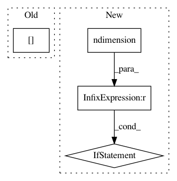

ab4d0a6e6cded5c967d601da6000b8c50b5c65ef,gpytorch/utils/toeplitz.py,,sym_toeplitz_derivative_quadratic_form,#Any#Any#,243
Before Change
dT_dc_row = utils.reverse(left_vector)
dT_dc_col[0] = dT_dc_row[0]
res = res + toeplitz_matmul(dT_dc_col, dT_dc_row, utils.reverse(right_vector))
res[0] -= left_vector.dot(right_vector)
return res
After Change
Returns:
- vector m - a vector so that the ith element is the result of \sum_j(u[j]*(dT/dc_i)*v[j])
if left_vectors.ndimension() == 1:
left_vectors = left_vectors.unsqueeze(0)
right_vectors = right_vectors.unsqueeze(0)
s, m = left_vectors.size()
dT_dc_col = torch.zeros(m)
res = torch.zeros(m)
In pattern: SUPERPATTERN
Frequency: 4
Non-data size: 4
Instances
Project Name: cornellius-gp/gpytorch
Commit Name: ab4d0a6e6cded5c967d601da6000b8c50b5c65ef
Time: 2017-09-08
Author: ruihan.wu14@gmail.com
File Name: gpytorch/utils/toeplitz.py
Class Name:
Method Name: sym_toeplitz_derivative_quadratic_form
Project Name: cornellius-gp/gpytorch
Commit Name: fbc57241b529ce921d664d86685935c4d3219feb
Time: 2018-11-05
Author: balandat@fb.com
File Name: gpytorch/likelihoods/noise_models.py
Class Name: HomoskedasticNoise
Method Name: forward
Project Name: cornellius-gp/gpytorch
Commit Name: 25400bfb161cd26528bb7bbeef99bac0fac07675
Time: 2018-11-12
Author: balandat@fb.com
File Name: gpytorch/lazy/diag_lazy_tensor.py
Class Name: DiagLazyTensor
Method Name: _quad_form_derivative
Project Name: cornellius-gp/gpytorch
Commit Name: bfa0cd26654cda62436b3ff55247996094b0a85f
Time: 2018-01-10
Author: gpleiss@gmail.com
File Name: gpytorch/lazy/lazy_variable.py
Class Name: LazyVariable
Method Name: add_diag